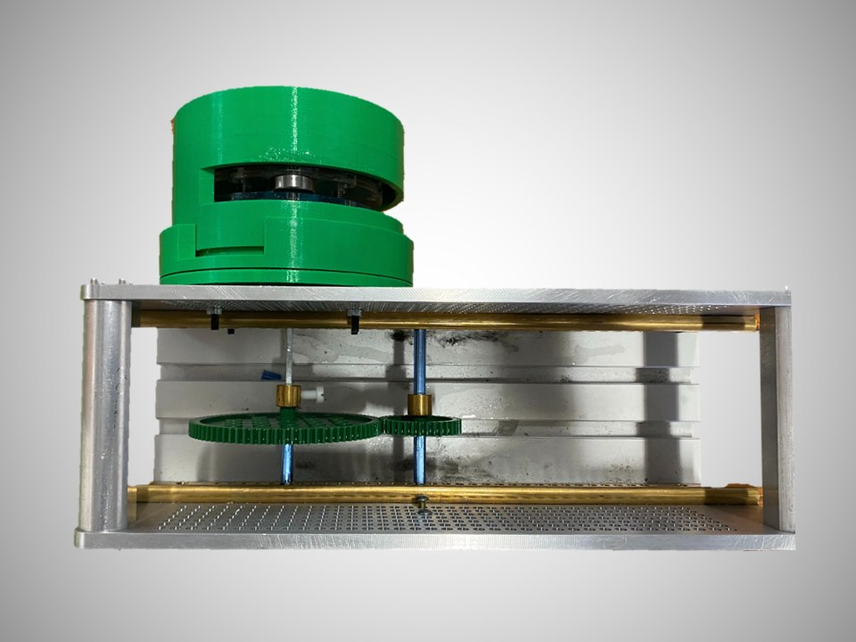

Groundwork & system definition
- Identified critical design parameters such as flow rate, accuracy, sterility, and operating life. Selected a peristaltic pump as the optimal technology for its precision, simplicity, and hygiene.
Project write-up · Mechanical design · Engineering
Compact, accurate fluid delivery for veterinary use, built around a rotary peristaltic pump.
Completed
A compact infusion/dispense device for veterinary use. The pump delivers precise small-volume doses and supports two operating modes: Direct Infusion mode (rate-controlled) and Dispense mode (volume-controlled). The design emphasises accuracy at low flow, high back-pressure tolerance, low power, and leakage resistance.
A full first-principles engineering analysis was conducted to determine the power, torque, and structural requirements of the pump. The analysis combined fluid mechanics, viscoelastic material modelling, drivetrain mechanics, and iterative spreadsheet simulations.
The drivetrain was designed to deliver sufficient torque and speed to operate the peristaltic pump across its full flow-rate range while remaining compact and energy-efficient.
The pump uses a multi-roller rotor to provide high-resolution fluid dosing. The rotor layout ensures consistent tube occlusion and smooth fluid displacement.
Power analysis combined fluid mechanics, viscoelastic material modelling, and rolling-contact mechanics to predict the pump’s operating requirements.
Materials were chosen to maximise service life, sterility, low noise, and manufacturability, while staying within the project’s budget constraints.
Interested in this project or a collaboration? Get in touch ↗